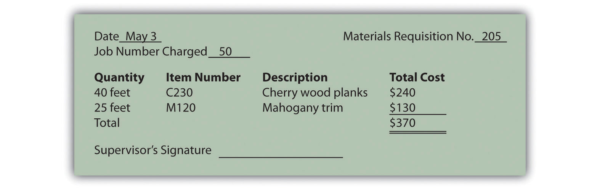
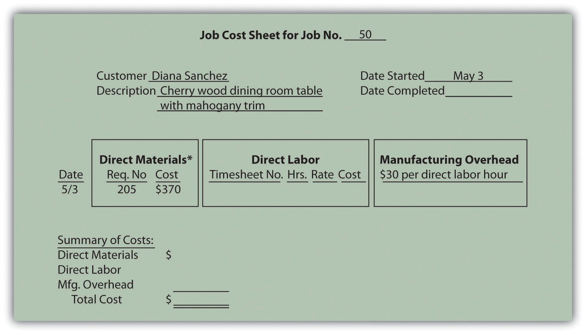
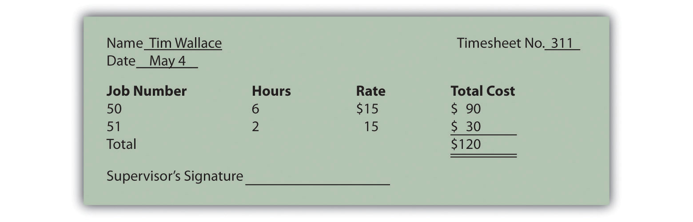

Question: Now that we know a job costing system records revenues and costs for each unique job, we can determine whether this type of system would be appropriate at Custom Furniture Company. Recall that Custom Furniture produces high-quality custom wood tables that are sold for between $1,000 and $30,000. A job costing system is a perfect fit for this type of company. How would Custom Furniture Company use a job costing system to track production costs?
Answer: We use financial information for the month of May at Custom Furniture Company to illustrate how a job costing system works. Refer to Chapter 1 "What Is Managerial Accounting?", as needed, for a refresher on manufacturing cost terms and how the three different inventory accounts are used by manufacturing companies. Let’s start our example with the purchase of raw materials.
Question: Recall from Chapter 1 "What Is Managerial Accounting?" that raw materials are the items necessary to build a product. For Custom Furniture Company, this includes items such as wood, brackets, screws, nails, glue, lacquer, and sandpaper. How do we record the purchase of raw materials?
Answer: The accountants at Custom Furniture record the cost of raw materials purchased in the raw materials inventory account. Assume Custom Furniture Company purchased $4,500 in raw materials on May 2. All purchases are on account. The journal entry to reflect this transaction is as follows:
This purchase of raw materials is further illustrated in the T-accounts shown in the following. Assume the beginning balance for raw material inventory is $25,000. Beginning balances are only provided for inventory accounts since the focus of this chapter is on manufacturing costs that flow through these accounts.
Introductory financial accounting texts discuss the rules for double-entry accounting in detail. Recall that the following account categories are increased with a debit (and are therefore decreased with a credit): assets, dividends, and expenses. Conversely, the following account categories are increased with a credit (and decreased with a debit): liabilities, stockholders’ equity, and revenues. Also note that the individual transactions shown throughout this chapter represent one example of many similar transactions that occurred throughout the month of May. A summary of activity for the entire month of May is presented in Figure 2.7 "Custom Furniture Company’s Journal Entries for May" and Figure 2.8 "Custom Furniture Company’s T-Accounts".
Question: The next step is to move raw materials from the storeroom to production. How does the company track this information, and how is this transaction recorded in the general journal?
Answer: A materials requisition formA form used to track materials taken out of raw materials inventory and placed into production. tracks materials taken out of raw materials inventory and placed in production. This form specifies the type, quantity, and cost of materials being requested, as well as the number of the job in which the materials will be used. Figure 2.2 "Materials Requisition Form for Custom Furniture Company" shows a materials requisition form that Custom Furniture Company used to transfer $370 in direct materials out of raw materials inventory into production.
Figure 2.2 Materials Requisition Form for Custom Furniture Company
The journal entry to reflect this transfer is as follows:
This flow of direct materials from one account to another is further illustrated in the T-accounts that follow. Assume the beginning balance for work-in-process inventory is $35,000.
Question: The next step is to post the information shown on the materials requisition form to the appropriate job cost sheet. Because the work-in-process (WIP) inventory account tracks manufacturing costs in total, a separate subsidiary ledger is necessary to track manufacturing costs for each job. The total of all WIP inventory subsidiary ledgers matches the WIP inventory account shown on the balance sheet. What does a WIP inventory subsidiary ledger look like, and how is it used?
Answer: The WIP inventory subsidiary ledger typically comprises many individual job cost sheets. A job cost sheetA means of accumulating the manufacturing costs incurred for each job. simply accumulates manufacturing costs incurred for each job. Figure 2.3 "Job Cost Sheet for Custom Furniture Company" shows a job cost sheet for Custom Furniture Company. Notice how the materials requisition in Figure 2.2 "Materials Requisition Form for Custom Furniture Company" is a line item in the job cost sheet for job 50.
Figure 2.3 Job Cost Sheet for Custom Furniture Company
*$370 comes from the total in Figure 2.2 "Materials Requisition Form for Custom Furniture Company".
Question: Recall from Chapter 1 "What Is Managerial Accounting?" that direct labor is defined as workers who convert materials into a finished product and whose time is easily traced to the product or job. Manufacturing companies, such as Custom Furniture Company, must keep track of the hours each worker spends on any given job. How do companies track this information, and how is this information recorded in the general journal?
Answer: Workers use a timesheetA document that workers use to track the hours spent on each job. to track the hours spent on each job. The timesheet is often called a time card, time ticket, or job ticket. The worker is responsible for completing the timesheet, including the date, job number, and hours worked on each job.
Figure 2.4 "Timesheet for Custom Furniture Company" provides an example of a timesheet used at Custom Furniture Company to track direct labor costs of $120 related to jobs 50 and 51 for Tim Wallace. The journal entry to reflect this is as follows:
Recording these direct labor costs is further illustrated in the T-accounts that follow. Again, beginning balances are only provided for inventory accounts since the focus of this chapter is on manufacturing costs that flow through these accounts.
Figure 2.4 Timesheet for Custom Furniture Company
The next step is to post the information shown on the timesheet to the appropriate job cost sheet, just as we did with direct materials. This is done for job 50 in Figure 2.5 "Direct Labor Costs for Custom Furniture Company’s Job 50".
Figure 2.5 Direct Labor Costs for Custom Furniture Company’s Job 50

*Direct labor information carried over from Figure 2.4 "Timesheet for Custom Furniture Company".
Provide the journal entry to record each of the following transactions:
Solutions to Review Problem 2.2